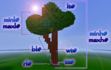

Environment brushes
The Tree Brush
/b t [treetype]: The tree brush plants a tree onto the block clicked. The block must be able to support minecraft's in-game tree-growth mechanics, so it must not be covered. You can specify which tree type you wish. The available tree types can be listed with /b t info.
VoxelTrees Brush

Examples of Stamp methods.
/b gt
- lt# - leaf value [data value]
- Input a the data value of the kind of leaf block you want on your tree; oak is "0" or default, pine/spruce is "1", birch is "2", and jungle is "3".
- wt# - wood type [data value]
- Input a the data value of the kind of log you want on your tree; oak is "0" or default, pine/spruce is "1", birch is "2", and jungle is "3".
- tt# - tree thickness [whole number]
- This field will determine the thickness of the entire tree, note that the base doesn't generate in a typical "disc" form, rather a more squared off disc. For example, inputting "2" will create a 2x2 trunk like seen in the picture, "1" will create a 1x1 trunk, "3" will create a 3x3 trunk, etc. Just keep playing with the values to find a thickness you like.
- rf# - root float [true or false]
- Will determine if roots "float" above the surface
- sh# - starting height [whole number]
- Determines the starting height of the tree. Using 5 will float the tree 5 metres above the ground.
- rl# - root length [whole number]
- Simply how long the roots will get this dick.
- ts# - truck slope chance [0-100]
- This will alter the percentage of how often, and the degree a tree will slope out it's trunk. Using a low number will make extremely straight trees while "100" will produce very willowy trees and split apart and slope dramatically.
- bl# - branch length [whole number]
- Determines the length of the branches that are generated
- minr# - minimum amount of roots [whole number]
- maxr# - maximum amount of roots [whole number]
- Generates a random amount of roots between the given intervel.
- minh# - minimum height [whole number]
- maxh# - maximum height [whole number]
- Sets the height of the tree based on the intervel given
- minl# - minimum leaf node size [whole number]
- maxl# - maximum leaf node size [whole number]
- Will determine the size of the leaf balls that will be generated.
- default - restore default parameters
A complex brush with MANY settings that allow you to create a variety of tree species, from realistic to fantastical. Experimentation is a must.
Clean Snow Brush
Indev
- /b cls: The Clean Snow brush removes floating snow tiles. The brush is set to non-true circles by default.
- /b cls true|false: Sets the brush use either true or false circles.
these are clone and copypasta brushes
Missing image
Let's clone a street lamp styled structure.
Setting up an appropriate Clone Zone.
Missing image
/b cs: The Clone / Stamp Cylinder Brush copies a zone of blocks in a cylindrical shape, allowing those copied blocks to be pasted elsewhere (hereafter referred to as the "clone zone"). The Clone zone is defined relative to a "key block" you will make your copy selection from.
/b 4: The brush size variable sets the radius from the center of the clone zone.
Example
In the image at right, we've set our clone zone's radius to 4 to include the 3 blocks of the street lamp's arm and the torch on the side.
/vc sets the centroid of the cylinder relative to the key block. The value can be set to a negative integer, enabling the clone zone to extend below the key block.
Example
Because the center block is difficult to click as a key block on this structure, we use "/vc -1" to include the base of the pole that resides below our key block, which will be the first wood block in the lamp's "pole". /vh sets the height, in blocks, of the clone zone.
Note
The height is counted from the centroid point, so make sure to set your height setting takes this into account if you are using a negative centroid!
Make your clone zone selection final by right-clicking the key block with the Gunpowder tool. VoxelSniper will report the number of copied blocks.
Re-adjust your Centroid to paste in at floor-level with the "/vc" command.
Missing image
Tip
Often, this is as simple inverting the centroid value from the Clone Zone's. In this example, we will adjust from "/vc -1" to "/vc 1" before Stamping our clone.
Examples of Stamp methods.
Stamp a new copy of your clone zone with the Arrow tool. The Stamp Zone comes in three flavors:
- /b cs 0: The Default Clone Stamp pastes in the clone zone exactly as it was at the original key block's location, including the air / empty blocks.
- /b cs a: No-Air Clone Stamp the Clone Zone in, but does not stamp in the air blocks from the clone zone. This will build your stamp into the surrounding landscape.
- /b cs f: Fill Stamp replaces ONLY the empty blocks in the stamp zone. All blocks in the stamp zone will remain untouched. In the example, note the missing half-block at the rear base of the stand.
Tip
This function is ideal for using the clone stamp brush with clumps for terraforming.
CopyPasta Brush
/b cp
This is a 2-point cuboid copy and paste brush for snipers, with rotation!
For safety reasons, Snipers are limited to copying a region no bigger than 10k blocks, which will accommodate a 21x21x21 region. Snipers may also toggle the pasting of air with /b cp air if they so desire. You can set the rotation with /b cp #, where # is 0, 90, 180 or 270 degrees clockwise. The axis of rotation should be the column of your first point selection, but that is still being tested. Functionality of this brush is as follows:
- Select two corners with the arrow (remember which you clicked first).
- Copy the region with the powder.
- Paste as many times as you would like with the powder, the blocks will be pasted as if this new point was the first block you had clicked with the arrow.
- You may switch rotation at any point without losing your block array, but you cannot change the axis of rotation.
- You may reset the brush at any time in the process by clicking the arrow a third time.